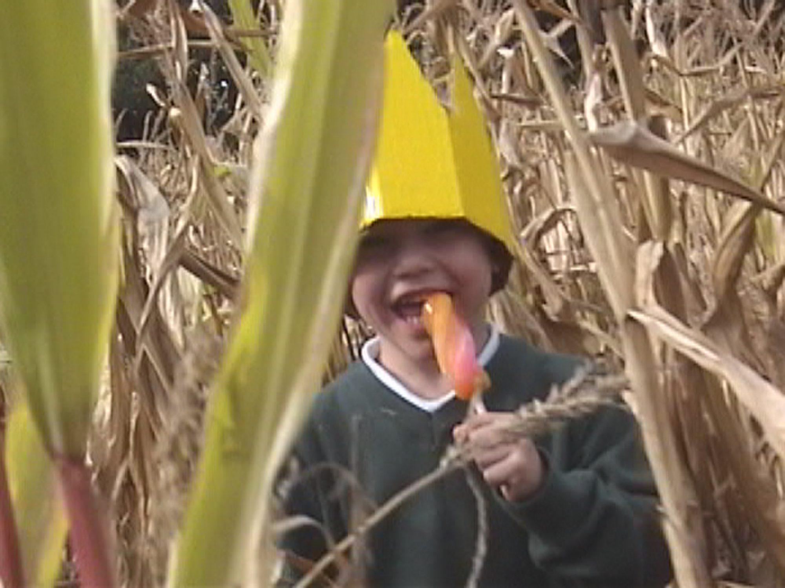
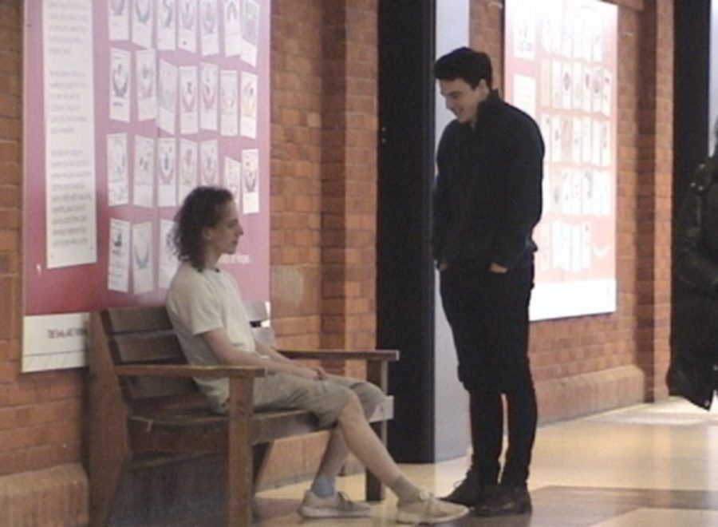
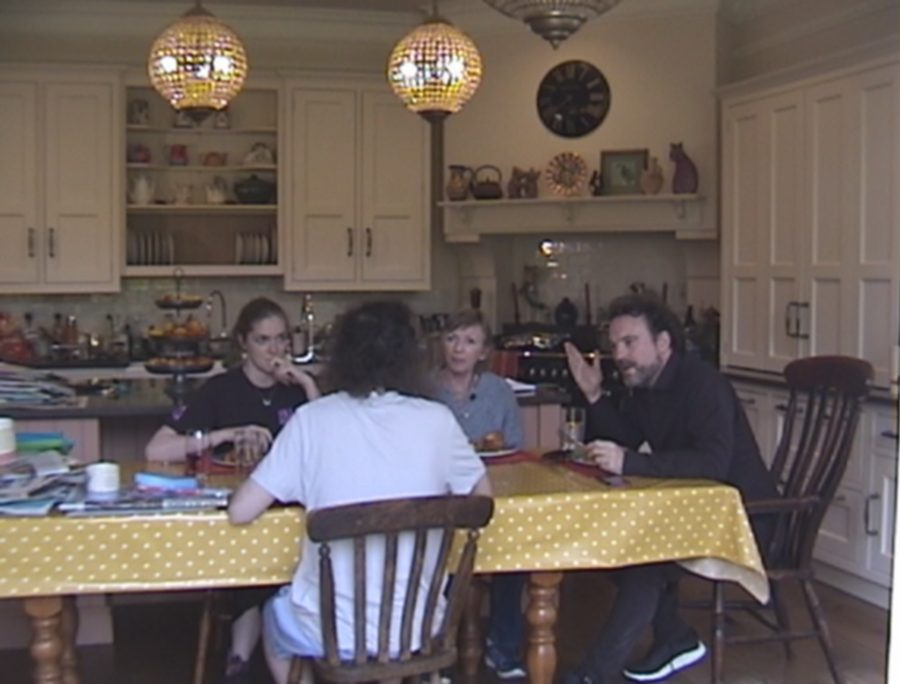
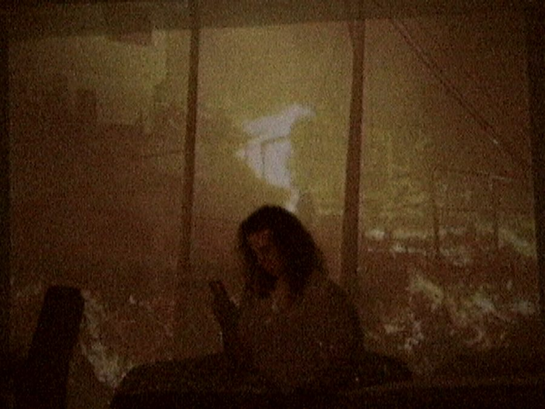
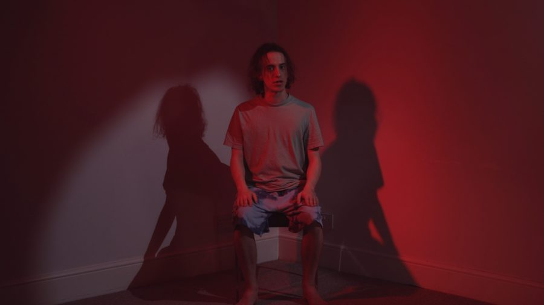

Festival release 2026
The Ice Lolly King
Trailer
A college dropout who has spent his whole life training as a hockey player realises it was never for him. He has one week left before moving back in with his strict parents.
A mumblecore-adjacent coming-of-age comedy-drama, shot on a Digital8 camcorder, that explores nostalgia, apathy, privilege, neurodiversity and gender.
Made on a shoestring budget, the film was shot by cinematographer Nicole Atalla (All That Glitters, Somewhere Else for Netflix) and scored by composer Zoë Blade (ContraPoints, hbomberguy). It is set for release on the festival circuit in 2026.
Stills






Next film
Break the Cycle
View film →